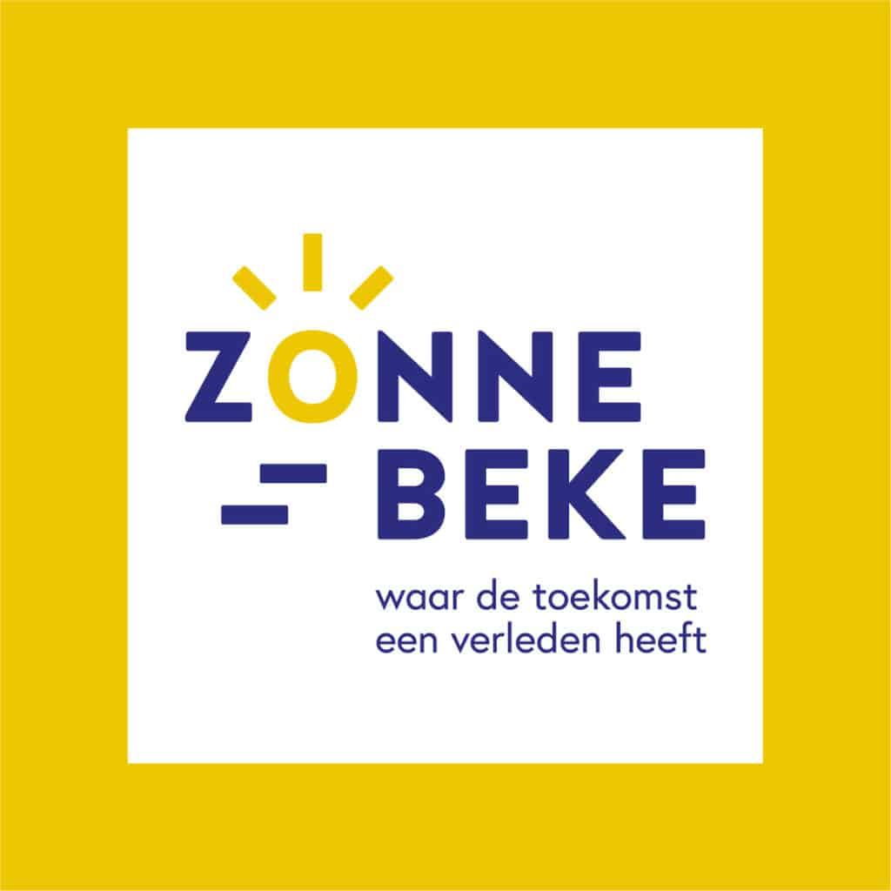
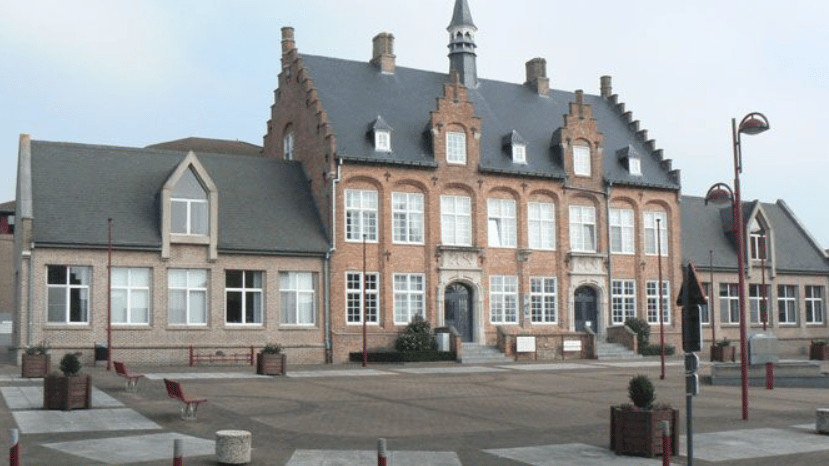

Wie is gemeentebestuur Zonnebeke?
Het gemeentehuis van Zonnebeke aan de Langemarkstraat is het administratieve hart van de gemeente. Onder leiding van burgemeester Koen Meersseman en waarnemend algemeen directeur Bo Vandenberghe werkt hier een team voor de Zonnebekenaar. Aan het centrale onthaal kun je zonder afspraak terecht voor vuilniszakken, Zonnebonnen en de UiTPAS. Voor meer specifieke administratie werkt het gemeentehuis volledig op afspraak. De Dienst Burgerzaken regelt hierbij persoonlijke documenten zoals identiteitskaarten, rijbewiezen en reispaspoorten, en beheert officiële akten voor huwelijken en geboorten. Daarnaast beoordeelt de Dienst Omgeving alle lokale bouw- en vergunningsaanvragen. Tot slot biedt de Sociale Dienst gerichte ondersteuning aan inwoners via budgetbegeleiding en de coördinatie van thuiszorg. Zo bundelt het gebouw alle essentiële dienstverleningen onder één dak.
Activiteiten binnen gemeentebestuur Zonnebeke
- Lezingen en themasessies
- UiTPAS-activiteiten
- De Leege Kouter (buurtspeeltuin)
- Aanvragen rijbewijzen
- Akten opmaken en registreren
- Vergunningsaanvragen beoordelen
Bedrijfslogo

Bedrijfsgebouw
